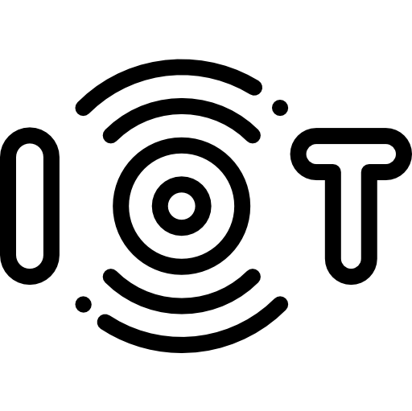

Tantárgy bemutató

Az IoT (Internet of Things) tantárgy célja, hogy a tanulók megismerjék az okoseszközök és az internetre kapcsolt rendszerek működésének alapjait. A tantárgy során a diákok megtanulják, hogyan lehet különböző szenzorokat, vezérlőket és egyéb elektronikai eszközöket összekapcsolni, valamint hogyan lehet ezeket programozással irányítani.
A gyakorlatok során főként a Raspberry Pi eszközt használtuk, amely egy kis méretű, de sokoldalúan használható számítógép. Ennek segítségével különböző elektronikai modulokat csatlakoztattunk, például kijelzőt, joystickot, reléket, ventilátort, LED világítást és különböző szenzorokat.
A feladatok során egyszerű IoT rendszereket építettünk és programoztunk, például világítás vezérlését, ventilátor működtetését vagy kijelzőn történő adatok megjelenítését. A cél az volt, hogy a tanulók gyakorlati tapasztalatot szerezzenek az okoseszközök működésében, valamint megértsék, hogyan lehet elektronikai eszközöket és szoftvert együtt használni egy automatizált rendszer létrehozásához.